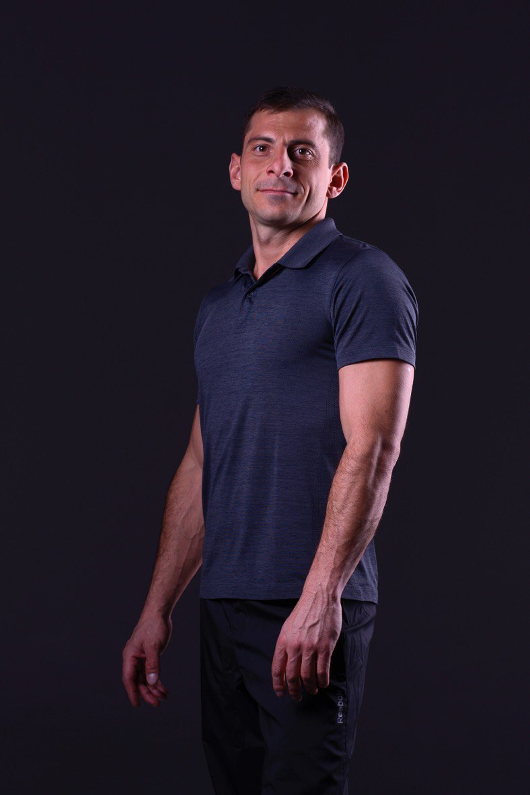
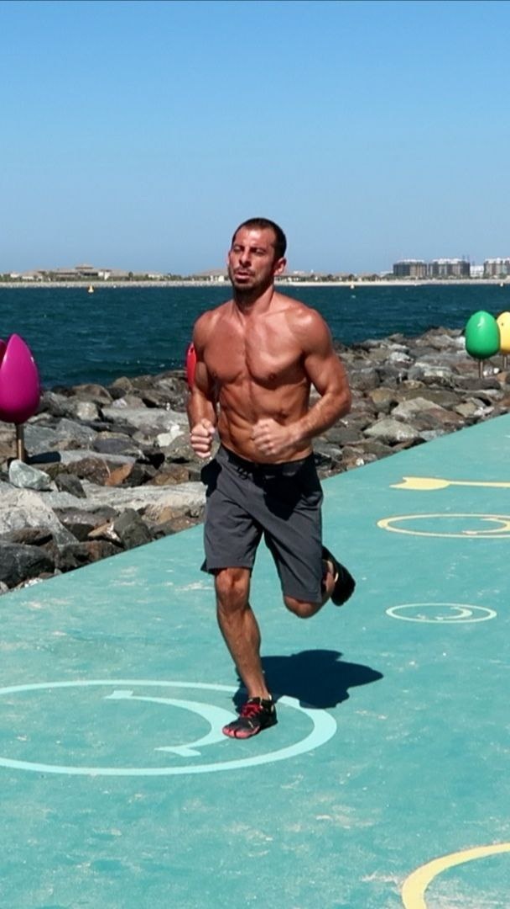
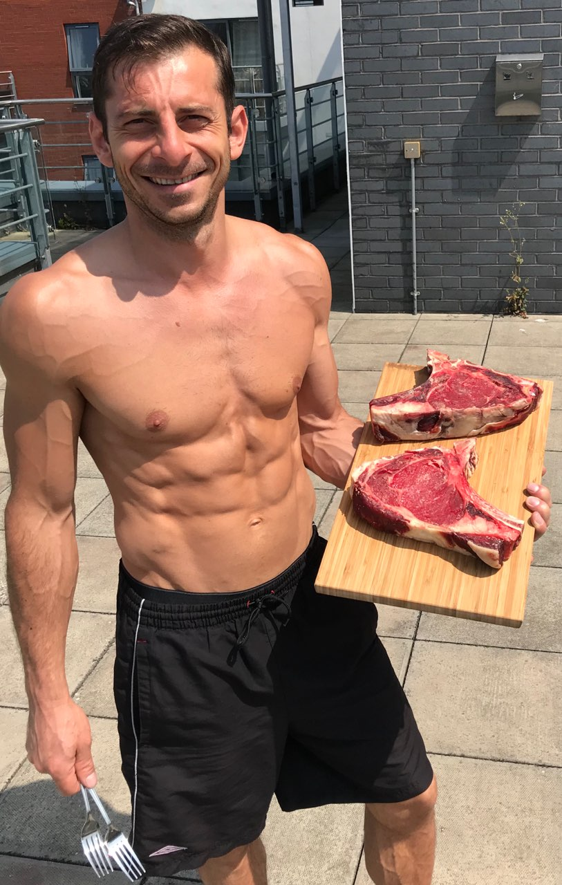

Build strength, reclaim movement
Evidence-based coaching in mobility, bodyweight strength, and metabolic health. Based in Queenstown, NZ. Specialized in diabetes remission protocols and functional performance.

Meet Your Coach
With over a decade of coaching experience, Lucian specializes in creating real, lasting transformations. His approach combines evidence-based training methodology with a deep commitment to understanding each client's unique needs.
Whether you're rebuilding after injury, managing a metabolic condition, or building strength from scratch, Lucian's personalized coaching will guide you to sustainable results.
Qualifications: BSc Sports Science, FRC Certified, Spiral Stabilization, Personal Trainer
Experience: Coaching since 2013 | Specialization: Functional movement, metabolic health, diabetes remission
What We Work On
Mobility Training
Restore functional range of motion and movement quality. Using FRC principles and spiral stabilization to address movement restrictions at the root.
Bodyweight Strength
Build real strength using progressive calisthenics and movement patterns. No equipment needed—just intentional training and progressive loading.
Diabetes Remission Coaching
Structured metabolic training and lifestyle coaching to help you achieve diabetes remission through evidence-based movement and nutrition protocols.
Philosophy in Action
Real coaching combines smart movement with evidence-based nutrition. Here's how it works in practice.


The Approach
Every body is different. Whether you're recovering from injury, managing a metabolic condition, or looking to build real strength, coaching is personalized, progressive, and grounded in movement science.
Training isn't about looking good in photos—it's about building capability, resilience, and the ability to move well for life. That's what we optimize for.
Real Results
What Clients Experience
Sustainable Weight Loss
Shed pounds and inches while building muscle. Real nutrition + functional training that works.
Reclaimed Energy & Vitality
Clients report feeling like they've regained years. Increased energy, better sleep, revitalized wellbeing.
Metabolic Transformation
Improved body composition, defined muscle, and metabolic health—not just aesthetics, but real capability.
Stronger Confidence
Achieving fitness goals builds self-assurance. Clients tackle new challenges and embrace confidence in all areas.
Functional Movement
Move the way your body was designed to move. Functional strength that serves you in daily life.
Lasting Results
No shortcuts. Built on nutrition, smart training, and accountability. Results that endure.
Client Stories
"It is the best experience I had with Personal training. Lucian has changed my lifestyle completely. Within 5 months I have lost 10 kilos and learned how to eat healthy and maintain a healthy lifestyle. Lucian has always paid attention to the details and tailor sessions taking in consideration my health issues and my strength."
"Lucian is a great PT. He's very knowledgeable about diet and nutrition and his training sessions are challenging and effective. I am more toned than I have been in years. Highly recommend him."
"I started at 118.6kg and went down to 94kg in under 5 months. Lucian concentrates on functional movement and moving your body the way it was designed to move. Following his diet and exercise plan really works for any body size or shape."